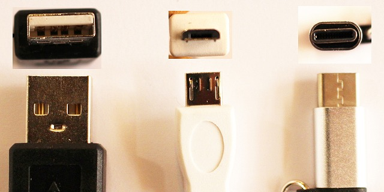
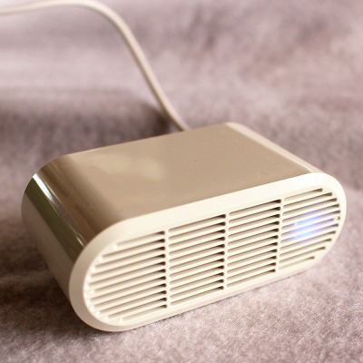
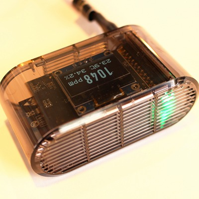
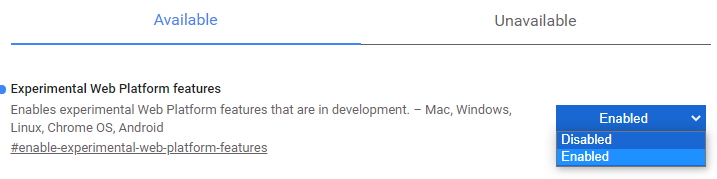
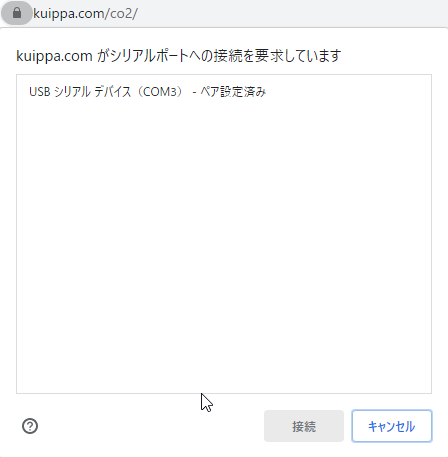

動作環境についての詳細説明
この二酸化炭素センサー用のページはアンドロイド用のアプリが動かない環境でも手軽に動いたらいいなと思いパソコン、ノートパソコン用に作られたポケットCO2センサーLite用のページです。
アンドロイドのスマートフォンやタブレットは公式アプリをご利用ください。iPhone、iPadには対応いたしておりません。
もしあなたが会社など、なんらかの組織に所属している場合、ご使用の前に管理部やシステム管理者にこのページをご案内いただければ幸いです。
ネットワーク管理者様、もしくはシステム管理者様、あるいはパソコンに詳しいがために呼び出されこの文章を読んでいただいている皆様へ。お読み頂き、ありがとうございます。
このページは有志によるサードパーティ制ですので、ブラウザのバージョンアップ等により予告なくサービスを終了することがあります。
また本サービスを運用した結果により、発生した損害については一切の責任を負いかねますのでご了承ください。
必要動作環境
最新版のGoogle Chrome ver80以上が必要です。
Httpsで接続をする必要があります。
Web Serialを使用可能にする必要があります。
ポケットCO2センサーの接続が必要です
動作手順
測定ページにアクセスします
ポケットCO2センサーをパソコンなどに接続します
ポケットCO2センサーのLEDがついたことを確認したら観測開始ボタンを押します
エラーが出ていると観測開始ボタンが押せません
Google Chromeについて
MicroSoft EdgeやAppleのSafariと同じようなホームページを見るためのアプリです。 Google Chromeを使用します。
Google Chromeを使用します。
Chromeのバージョン80以上が必要です。
Google Chrome （安定版）の最新版はバージョン88（2021年1月19日）以上です。
Google Chrome （ベータ版）の最新版はバージョン90（2021年3月19日）以上です。
iPad,iPhoneや古いマシンではChromeのバージョン如何にかかわらず現在のところ対応いたしておりません。
これはAppleのスマートフォン向けChromeは使用できる機能に制限があるためです。
USBについて

写真左からtype-A、micro-B、type-C
USB type-A：パソコンのUSBに利用されている、もっとも一般的な形式です。
USB Micro-B：スマートフォン、タブレットやポケットCO2センサーで利用されています。
USB Type-C：2019年頃からのスマートフォンで利用されています。差し込みに裏表がありません
type-cは2019年以降のスマートフォンやPCなどにコネクタがあることがあります。
ポケットCO2センサー内にはtype-Bをtype-Cに変換するコネクターがついています。
スマートフォン、タブレットなどでUSB接続した場合、給電モード（スマートフォンを充電するためのモード）と、配電モード（OTG 接続）があります。 利用のためには配電モードに切り替える必要があります。機種によって自動で切り替わったり、接続時に確認画面がでるもの、または、 システム設定でOTG機能を有効にしてから機器を接続しなければいけないもの、逆に機器を接続してから設定でOTG機能を有効にしなければいけないものなど様々です。 詳しくはお使いの「機種名＋OTG 接続」で検索してください。
配電接続が正しくされるとポケットCO2センサー側のLEDが点灯します。 PC側からセンサーを認識できているか確認する方法としてwindowsの場合、スタートボタン→設定→デバイスの「その他のデバイス」に「USBシリアルデバイス(COM3)」と表示されます。
100円ショップなどで売られているUSBケーブルの中にはバッテリーデリバリー、給電専用で通信ができないものがあります。このケーブルを使うと何をやっても繋がりません。
ポケットCO2センサーについて

スペック等の公式情報はポケットCO2センサーをご覧ください。
オンラインマニュアルもこちらにあります。
ポケットCO2センサー購入は
購入ページへ
白いLite版と液晶の表示機能のついたPro版があります。Pro版はwifiにてPC等と接続をおこなうので、通信設定等の手順がまったく異なります。
接続されている場合、LEDランプがつきます。 LEDランプは二酸化炭素濃度に応じて色が変化します。
Web Serialについて
Web USBやWeb Serialと呼ばれる技術はhtml5以降実装された比較的新しい技術です。 ブラウザからUSB接続されている機器を操作できるとても便利な機能ですが、反面、将来的にはなんらかのセキュリティホールになる可能性もあります。
そのため利用にはユーザー側でも３段階の手順が必要になります。
- ユーザーのブラウザの#enable-experimental-web-platform-features> がEnabledになっていること
- ユーザーがブラウザ上でボタンを押して実行すること
- 表示されるウインドウ内にてユーザーが目的のUSB機器を選択して接続ボタンを押すこと
それぞれについて詳細を説明します。
１．ブラウザにて新しいタブを開いてURLバーに「 chrome://flags/ 」を入力してアクセスしてください。 「 #enable-experimental-web-platform-features 」のフラグを検索して、DisabledをEnabledに変更しRelaunchボタンを押してください。  この設定は一度すると、次回も有効のままになります。 もし、長期に渡り本機能を使用予定がないマシンはこの２番めのフラグを「Disabled」に戻してください。
２．測定画面にて測定開始ボタンを押してください。
３．シリアルポートへの接続を要求されたら「USBシリアルデバイス」を「選択」して、「接続」ボタンを押してください。ここにリストで候補が出ない場合、ポケットCO2センサー機器を認識できていない可能性があります。
「USBについて」の説明項目をご確認ください。

Web Serialはまだ実験的な機能なため将来仕様が大きく変わる可能性があり、ブラウザのバージョンアップなどにより突然動かなくなることがあります。